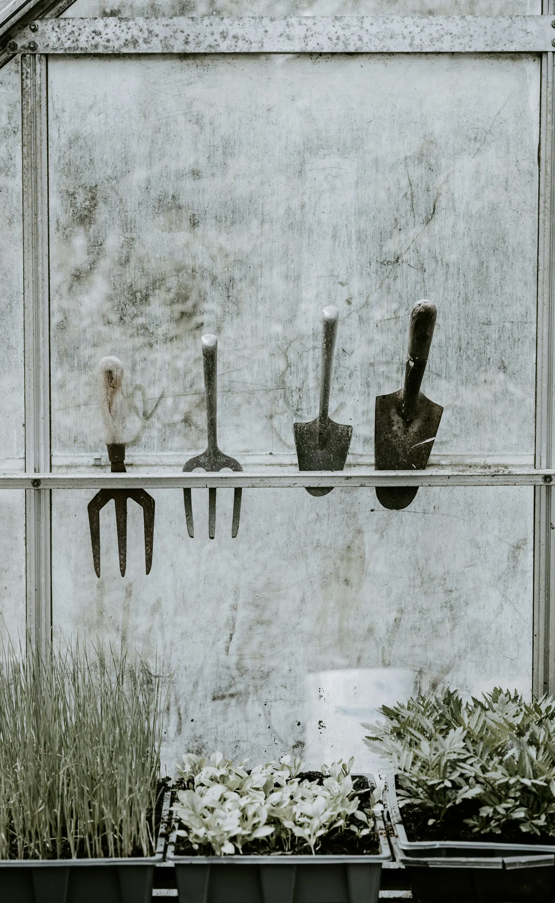
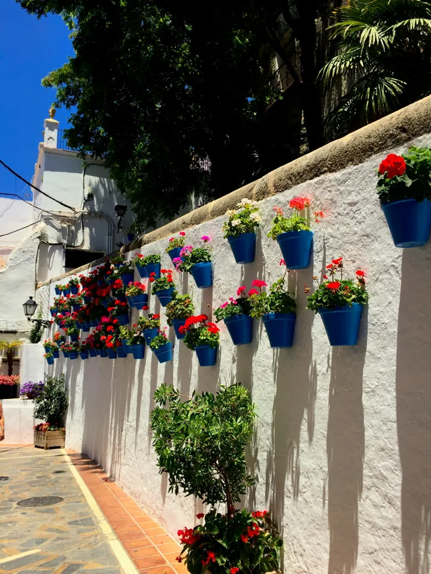

October in the garden: a little preparation before winter
Seasonal jobs for gardens across Surrey, Hampshire and Sussex.
October is a useful month to take stock of the garden and decide what needs attention before winter. For gardens across Surrey, Hampshire and Sussex, let the conditions in your own garden guide the work. A sheltered border and an exposed lawn may need quite different care.
Keep on top of leaves
Clear fallen leaves from the lawn so they do not block light and smother the grass. Collect them for leaf mould, or leave some beneath shrubs where they can break down and provide shelter for wildlife. Keep the routes you use regularly clear too.
Work with the weather
Grass may still need mowing during mild spells. Raise the cutting height a little compared with summer. Leave lawn renovation jobs for suitable conditions rather than working when the ground is waterlogged or the weather is frosty, very wet or very dry.
Plant for next year
You can continue planting spring-flowering bulbs and suitable herbaceous perennials. Overcrowded perennials can also be divided. Check the requirements of each plant before choosing its position, and prepare the ground for any bare-root trees or hedging you plan to plant later in the season.
Tidy selectively
There is no need to strip every border bare. Standing stems can provide winter shelter for wildlife. Remove collapsed, mushy growth, but leave healthy structure where it is useful. Check tender plants and arrange suitable frost-free shelter before cold weather arrives. Raise patio pots on feet so they are not sitting in water.

Make the next visit count
Walk around the garden and write a short list:
- Leaves to clear.
- Borders to care for.
- Plants to protect.
- Any areas that stay unusually wet.
If you need help, Blossom can agree a seasonal tidy-up or regular maintenance around the jobs your garden needs.
Need a hand with the seasonal jobs?
Explore our garden maintenance service for regular care and seasonal tidy-ups.
Discuss maintenance